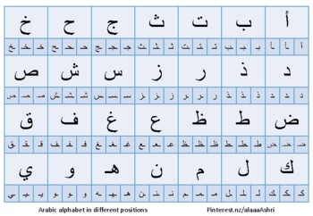
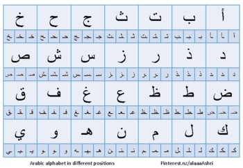

EGYPT


ٱللُّغَةُ ٱلْعَرَبِيَّة هي أكثر اللغات السامية تحدثًا، وإحدى أكثر اللغات انتشاراً في العالم، يتحدثها أكثر من 467 مليون نسمة.ويتوزع متحدثوها في الوطن العربي، بالإضافة إلى العديد من المناطق الأخرى المجاورة كالأحواز وتركيا وتشاد ومالي والسنغال وإرتيريا وإثيوبيا وجنوب السودان وإيران. وبذلك فهي تحتل المركز الرابع أو الخامس من حيث اللغات الأكثر انتشارًا في العالم، وهي تحتل المركز الثالث تبعًا لعدد الدول التي تعترف بها كلغة رسمية؛ إذ تعترف بها 27 دولة لغةً رسميةً، واللغة الرابعة من حيث عدد المستخدمين على الإنترنت. اللغةُ العربيةُ ذات أهمية قصوى لدى المسلمين، فهي عندَهم لغةٌ مقدسة إذ أنها لغة القرآن، وهي لغةُ الصلاة وأساسيةٌ في القيام بالعديد من العبادات والشعائرِ الإسلامية. العربيةُ هي أيضاً لغة شعائرية رئيسية لدى عدد من الكنائس المسيحية في الوطن العربي، كما كُتبَت بها كثير من أهمِّ الأعمال الدينية والفكرية اليهودية في العصور الوسطى. ارتفعتْ مكانةُ اللغةِ العربية إثْرَ انتشارِ الإسلام بين الدول إذ أصبحت لغة السياسة والعلم والأدب لقرون طويلة في الأراضي التي حكمها المسلمون. وللغة العربية تأثير مباشر وغير مباشر على كثير من اللغات الأخرى في العالم الإسلامي، كالتركية والفارسية والأمازيغية والكردية والأردية والماليزية والإندونيسية والألبانية وبعض اللغات الإفريقية الأخرى مثل الهاوسا والسواحيلية والتجرية والأمهرية والصومالية، وبعض اللغات الأوروبية وخاصةً المتوسطية كالإسبانية والبرتغالية والمالطية والصقلية؛ ودخلت الكثير من مصطلحاتها في اللغة الإنجليزية واللغات الأخرى، مثل أدميرال والتعريفة والكحول والجبر وأسماء النجوم. كما أنها تُدرَّس بشكل رسمي أو غير رسمي في الدول الإسلامية والدول الإفريقية المحاذية للوطن العربي. العربية لغةٌ رسمية في كل دول الوطن العربي إضافة إلى كونها لغة رسمية في تشاد وإريتريا. وهي إحدى اللغات الرسمية الست في منظمة الأمم المتحدة، ويُحتفل باليوم العالمي للغة العربية في 18 ديسمبر كذكرى اعتماد العربية بين لغات العمل في الأمم المتحدة. وفي سنة 2011 صنفت بلومبيرغ بيزنس ويك اللغة العربية في المرتبة الرابعة من حيث اللغات الأكثر فائدة في الأعمال التجارية على مستوى العالم. وفي 2013 نشر المجلس الثقافي البريطاني تقريرًا مفصلاً عن اللغات الأكثر طلباً في المملكة المتحدة تحت عنوان "لغات المستقبل" وتبين أن العربية تحتل المرتبة الثانية على مستوى العالم وفي عام 2017 احتلت المرتبة الرابعة. فيما يخص اللغات الأكثر جنيًا للأرباح في بريطانيا تأتي العربية في المرتبة الثانية وفقًا للمنظمة. واللغة العربية من أغزر اللغات من حيث المادةِ اللغوية، فعلى سبيل المثال يحوي معجم لسان العرب لابن منظور من القرن الثالث عشر أكثر من 80 ألف مادة، بينما في اللغة الإنجليزية فإن قاموس صموئيل جونسون - وهو من أوائل من وضع قاموساً إنجليزياً من القرن الثامن عشر- يحتوي على 42 ألف كلمة. تحتوي اللغة العربية 28 حرفاً مكتوباً. ويرى بعضُ اللغويين أنه يجب إضافة حرف الهمزة إلى حروف العربية، ليصبحَ عدد الحروف 29. تُكتب العربية من اليمين إلى اليسار - ومثلها اللغة الفارسية والعبرية على عكس كثير من اللغات العالمية - ومن أعلى الصفحة إلى أسفلها. الأسماء «لغة القرآن» بما أن القرآن نزل باللغة العربية، فقد أُطلق اسم اللغة عليه. «لغة الضاد» هو الاسم الذي يُطلقه العرب على لغتهم، فالضاد حرف يختص به العرب، ولا يوجد في كلام العجم إلا في القليل. ولذلك قيل في قول أَبي الطيب المتنبي: وبِهِمْ فَخرُ كلِّ مَنْ نَطَقَ الضَّادَ وعَوْذُ الجاني وغَوْثُ الطَّريدِ حيث ذهب به إلى أنها للعرب خاصة. غير أن الضاد المقصودة هنا ليست الضاد المعروفة والمستخدمة اليوم في دول مثل جمهورية مصر العربية، وهي دال مفخمة، وهي التي لا تُستحسن قراءة القرآن أو الشعر العربي بها، أما الضاد العربية القديمة فهي صوتٌ آخر مزيجٌ بين الظاء واللام، واندمج هذا الصوت مع الظاء في الجزيرة العربية. ولأن الظاء هي ذال مفخمة، أي أنها حرف ما - بين - أسناني، فقد تحولت بدورها في الحواضر إلى دال مفخمة كتحول الثاء إلى تاء والذال إلى دال، وصارت هذه الدال المفخمة هي الضاد الحديثة. فالدال المفخمة ليست خاصة بالعربية، بل هي في الواقع موجودة في لغات كثيرة. وهي ليست الضاد الأصلية التي كان يعنيها المتنبي وابن منظور صاحب لسان العرب وغيرهم. تصنيفها التسلسل الزمني للغات السامية. تنتمي اللغة العربية إلى أسرة اللغات السامية المتفرعة من مجموعة اللغات الإفريقية الآسيوية. وتضم مجموعة اللغات السامية لغات حضارة الهلال الخصيب القديمة، مثل الأكادية والكنعانية والآرامية واللغة الصيهدية (جنوب الجزيرة العربية) واللغات العربية الشمالية القديمة وتشترك في صلاتها مع اللغة المصرية القديمة وبعض لغات القرن الإفريقي كالأمهرية. وعلى وجه التحديد، يضع اللغويون اللغة العربية في المجموعة السامية الوسطى من اللغات السامية الغربية. والعربية من أحدث هذه اللغات نشأة وتاريخاً، ولكن يعتقد البعض أنها الأقرب إلى اللغة السامية الأم التي انبثقت منها اللغات السامية الأخرى، وذلك لاحتباس العرب في جزيرة العرب فلم تتعرض لما تعرضت له باقي اللغات السامية من اختلاط. ولكن هناك من يخالف هذا الرأي بين علماء اللسانيات، حيث أن تغير اللغة هو عملية مستمرة عبر الزمن والانعزال الجغرافي قد يزيد من حدة هذا التغير حيث يبدأ نشوء أيّة لغة جديدة بنشوء لهجة جديدة في منطقة منعزلة جغرافياً. بالإضافة لافتراض وجود لغة سامية أم لا يعني وجودها بالمعنى المفهوم للغة الواحدة بل هي تعبير مجازي قصد به الإفصاح عن تقارب مجموعة من اللغات فقد كان علماء اللسانيات يعتمدون على قرب لغة وعقلية من يرونه مرشحاً لعضوية عائلة اللغات السامية وبُنيت دراساتهم على أسس جغرافية وسياسية وليس على أُسس عرقية ولا علاقة لها بنظرة التوراة لأبناء سام وكثرة قواعد اللغة العربية ترجح أنها طرأت عليها في فترات لاحقة وأنها مرت بأطوار عديدة مما يضعف فرضية أن هذه اللغة أقرب لما عُرف اصطلاحاً باللغة السامية الأم هذه، ولا توجد لغة في العالم تستطيع الادعاء أنها نقية وصافية من عوامل ومؤثرات خارجية تُعرفُ اللغةُ العربية لغةً على أنّها المصطلحاتُ والمرادفاتُ التي دوّنها العلماءُ في المعاجم. أمّا اصطلاحاً فهي إحدى لغاتِ العالم السامية والمنتشرة على نطاق واسعٍ حول العالم، حيث إنّ هناك 422 مليون نسمة من متحدّثيها، ويتركزون بشكل كبير في الوطن العربي، وبعض المناطق المجاورة، مثل: تركيا، والأحواز، والسنغال، وتشاد، وإثيوبيا، وإيران، وجنوب السودان، وغيرهم من المناطق. الجذور القديمة: يعود تاريخ اللغة العربية إلى القرن الرابع قبل الميلاد. كانت لغة القرآن الكريم والأدب العربي القديم. العصور الذهبية: في العصور الوسطى، ازدهرت اللغة العربية في العالم الإسلامي. كتب العلماء والشعراء والفلاسفة بالعربية، وترجموا الأعمال اليونانية والهندية إلى هذه اللغة. العلماء والمؤلفون: شهدت اللغة العربية ظهور العديد من العلماء والمؤلفين البارزين، مثل ابن سينا والمأمون وابن النفيس. الأدب العربي: تطور الأدب العربي عبر العصور، من الشعر الجاهلي إلى الأدب الحديث. كتب الشعراء مثل الشاعر الأموي الفرزدق والشاعر العباسي المتنبي. اللغة العربية اليوم: العربية ليست فقط لغة دينية، بل هي لغة حية تُستخدم في الأدب والإعلام والعلوم والتجارة. بالطبع، سأقدم لك مقالاً يسلط الضوء على جمال وأهمية اللغة العربية، وهو كالتالي: --- *اللغة العربية: لغة الضاد* اللغة العربية، تلك اللغة العريقة التي تنبض بالحياة في كل حرف وكلمة، هي لغة الضاد التي تفردت بجمالها وعمقها عبر العصور. تُعد اللغة العربية من اللغات السامية الإنسانية التي حافظت على تاريخها اللغوي والنحوي منذ قديم الزمان، وهي لغة القرآن الكريم، ولغة الأدب والشعر الذي يعبر عن ثقافة وتراث الأمة العربية. *أهمية اللغة العربية* تكمن أهمية اللغة العربية في كونها جزءاً لا يتجزأ من الحضارة العربية. إنها لغة العديد من الشعوب والقبائل، وقد ساهمت في نهوض العديد من الحضارات، خاصة الأوروبية، مما أدى إلى تشجيع الأوروبيين على تعلمها وفهمها. *خصائص اللغة العربية* تتميز اللغة العربية بمجموعة من الخصائص الفريدة التي تجعلها تتميز عن غيرها من اللغات العالمية. من هذه الخصائص: - *الأصوات*: تُعتبر اللغة العربية غنية بأصواتها المتنوعة التي تستخدم اللسان والحلق والحنجرة لنطق الحروف والكلمات بدقة. - *المفردات*: تحتوي اللغة العربية على معجم غني بالمفردات والتراكيب، وتتكون مفرداتها الأصلية من جذور ثلاثية تنتج العديد من الكلمات والمعاني. - *اللفظ*: تُلفظ الكلمات في اللغة العربية بالاعتماد على استخدام حركات لغوية دقيقة تُعرف بالتشكيل. *الاهتمام العالمي باللغة العربية* تُعتبر اللغة العربية من اللغات العالمية الأكثر انتشاراً، وهي واحدة من اللغات المعتمدة في الأمم المتحدة. يسعى العديد من الطلاب، خاصة غير الناطقين بها، إلى دراستها للتعرف على جمال كلماتها وثراء معانيها. *تحديات تواجه اللغة العربية* رغم جمالها وأهميتها، تواجه اللغة العربية تحديات عديدة في العصر الحديث، منها الحفاظ على نقائها ومواكبتها للتطورات اللغوية والتكنولوجية. ومع ذلك، تبقى اللغة العربية رمزاً للهوية والثقافة العربية، ومنارة للعلم والمعرفة.
ظهرت اللغة العربية منذ أكثر من ألف عام، ويُعتقد أنها نَشَأت في شبة الجزيرة العربية وكان أول من تحدث بها قبائل بدوية تسكن في الحدود الشمالية الغربية في السعودية، وهي واحدة من اللغات السامية، مثل: اللغة الأكدية والعبرية في الشمال، والآرامية والسريانية في الشرق والغرب، والحبشة في الجنوب، واللغات القبطية والفينيقية في لبنان، أما في الوقت الحالي انقرض عدد كبير من هذه اللغات بسبب انتشار اللغة العربية بشكل كبير، وكان السبب الرئيسي لانتشار اللغة العربية هو تنقل القبائل البدوية من مكانٍ لآخر، بالإضافة لزواج العرب من السكان الأصليين للأماكن التي يزورونها، وأيضاً كان للفتوحات العربية في القرن السابع الميلادي دوراً كبيراً في انتشارها. يتناول تطور اللغة العربية. فأقدم نص عربي شمالي عثر عليه هو من أوائل الألفية الأولى قبل الميلاد بعدما انفصلت اللغة العربية البدائية عن السامية الوسطى في وقت غير معروف. على الأرجح اُستخدمت اللغة العربية البدائية في جنوب الشام وشمال شرق شبه الجزيرة العربية. ثم تكثر الدلائل عن اللغة العربية الشمالية القديمة في أواخر الألفية الأولى ق.م عبر نقوش في الأبجديات النبطية والصفائية والحسمائية. ويقال إن قصائد المعلقات كانت تـٌكتب بماء الذهب وتعلق على أستار الْكَعْبَةِ قبل مجيء الْإِسْلَامِ . وطبقا للمقالة الألمانية ، فتاريخ اللغة العربية بدأ مع السجلات المكتوبة باللغة العربية، فأقدم وثيقة مكتوبة هي المخطوطة القرآنية التي كتبت في عهد الخليفة الراشد عثمان بن عفان (644-656). ويقال أن الشعر الجاهلي الذي يعود تاريخه إلى القرن السادس لم يكتب إلا في القرنين السابع والثامن حيث كان ينقل شفويا. شكل كلًا من القرآن والشعر العربي الأساس لعلماء اللغة العربية في القرنين الثامن والتاسع لإنشاء نظام تعليم بمقاييس عالية الجودة، مما جعل اللغة العربية لغة ثقافة وعلم. اللغة العربية هي اللغة الأكثر شيوعًا لعائلة اللغات السامية وواحدة من اللغات الرسمية الست للأمم المتحدة. ويتحدث العربية حاليا حوالي 370 مليون شخص كلغة أم أو لغتهم الثانية في 22 دولة عربية ويتحدث بها أكثر من 467 مليون نسمة. العديد من البلدان الأخرى في آسيا وأفريقيا. باعتبارها واحدة من اللغات الست الأكثر شيوعًا في العالم وهي لغة الإسلام. تعد لغة عالمية، فهي تحتل المرتبة الخامسة من حيث عدد الناطقين بها. بدأ التحدث باللغة العربية في جنوب الشام وشمال شرق شبه الجزيرة العربية أوائل الألفية الأولى قبل الميلاد. ويمكن تصنيف اللهجات العربية القديمة من هذا الوقت إلى مجموعتين: سلسلة لهجوية شمالية، وحجازية قديمة في شمال الحجاز. يعود أقدم دليل على اللغة العربية إلى القرن التاسع قبل الميلاد، وهي لأسماء أشخاص في النقوش المسمارية الآشورية. تم توثيق التنوع اللهجي للغة العربية القديمة بشكل جيد من خلال تلك النقوش. يوثق نقش يعود تاريخه إلى سنة 328 م باللغة العربية وبخط نبطي متفرع من الآرامية. في القرن الرابع ق.م اُنشأت مملكة الأنباط العربية، واتسعت جنوبًا وشمالًا وانشرت اللغة العربية في المناطق التي تولتها. لذا وصلت ثقافة الكتابة النبطية إلى شمال الحجاز في القرن الأول الميلادي، وبعد استيلاء الأنباط على تيماء ودومة استبدلت اللغة العربية اللغتين المحليتين التيمائية والدومية فيهما. وتحت التأثير التجاري لمملكة الأنباط، ظهرت لغة عربية موحدة بين القرنين الرابع والسادس (اعتقد بعد الميلاد!). ثم بدأت العربية الفصحى لتكون لغة أدبية مطورة بالكامل في منتصف القرن السادس (أعتقد بعد الميلاد!) . تحتوي مختارات أدبية مثل المعلقات بها أبيات شعرية متنوعة موضوعيًا في شكل القصيدة. انتشرت اللغة العربية مع ظهور الإسلام وفتوحات العرب في القرنين السابع والثامن. فقد أطاحت بالسبئية في جنوب شبه الجزيرة العربية، والآرامية في سوريا والعراق، والفارسية في العراق، والقبطية في مصر، واللهجات الأمازيغية في شمال إفريقيا، وأثبتوا وجودهم إلى جانب الإسبانية والبرتغالية في شبه الجزيرة الإيبيرية حتى نهاية القرن الخامس عشر. تم تعريب جزر مالطا القريبة من تونس، ومن عمان توغلت اللغة العربية في زنجبار وشرق إفريقيا. تُستخدم اللغة العربية الفصحى اليوم مكتوبة في 22 دولة عربية: من موريتانيا إلى العراق ومن اليمن إلى سوريا. تتحدث اللغة العربية أيضًا من قبل الأقليات في إيران (خوزستان على الضفة الشمالية من الخليج) وأفغانستان وجمهوريات الاتحاد السوفيتي السابق (أوزبكستان) وقبرص وتركيا وفلسطين وإثيوبيا. كما أنها لغة عبادة جميع الشعوب الإسلامية غير العربية. «وهكذا فإن اللغة العربية تقف أمامنا اليوم كونها ذات أهمية عملية وعلمية كبرى، وهي لغة على الرغم من استخدامها على نطاق واسع وتاريخها الثري، إلا أنها ظلت نقية للغاية وغير متأثرة، وتحتوي على مكونات أجنبية أقل من ثقافة اللغات الأوروبية. ومع ذلك فهي تصل إليهم في رشاقة تعبيرها. (برتولد شبولر)»


 
